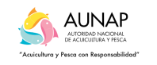
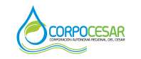
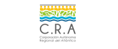
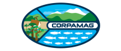
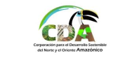
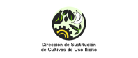

El Observatorio de la Tierra y el Territorio proporciona información espacial oportuna, precisa y confiable sobre la transformación del territorio para apoyar la toma de decisiones y la planeación estratégica en el marco de la Administración del Territorio a más de 70 entidades por medio de una licencia multientidad para Entidad Gobierno. A continuación, se presenta el listado de entidades.
- Agricultura y Desarrollo Rural
- Agencia de Desarrollo Rural (ADR)
- Agencia Nacional de Tierras (ANT)
- Autoridad Nacional de Acuicultura y Pesca (AUNAP)
- Instituto Colombiano Agropecuario (ICA)
- Ministerio de Agricultura - Gestión General
- Unidad Administrativa Especial de Gestión de Restitución de Tierras Despojadas
- Unidad de Planificación Rural Agropecuaria (UPRA)
- Ambiente Y Desarrollo Sostenible
- Corporación Autónoma Regional de Boyacá (CORPOBOYACÁ)
- Corpocaldas
- Corpochivor
- Corporación Autónoma Regional de la Frontera Nororiental (CORPONOR)
- Corpoguajira
- Corporación Autónoma Regional de la Orinoquía (CORPORINOQUIA)
- Corporación CVS
- Corporación Autónoma Regional de Nariño (CORPONARIÑO)
- Corporación Autónoma Regional de Risaralda (CARDER)
- Corporación Autónoma Regional de Santander (CAS)
- Corporación Autónoma Regional de Sucre (CARSUCRE)
- Corporación Autónoma Regional del Alto Magdalena (CAM)
- Corporación Autónoma Regional del Atlántico (CRA)
- Cardique
- Corporación Autónoma Regional del Centro de Antioquia (CORANTIOQUIA)
- Corpocesar
- Corpoguavio
- Corporación Autónoma Regional del Magdalena (CORPAMAG)
- Corporación Autónoma Regional del Quindío (CRQ)
- Corporación Autónoma Regional del Sur de Bolívar (CSB)
- Corporación Autónoma Regional para el Desarrollo Sostenible del Chocó (CODECHOCO)
- Corporación Autónoma Regional para la Defensa de la Meseta de Bucaramanga (CDMB)
- Corporación para el Desarrollo Sostenible de la Mojana y El San Jorge (CORPOMOJANA)
- Corporación para el Desarrollo Sostenible del Archipiélago de San Andrés, Providencia y Santa Catalina (CORALINA)
- Cormacarena
- Corporación para el Desarrollo Sostenible del Norte y Oriente de la Amazonía (CDA)
- Corporación para el Desarrollo Sostenible del Sur de la Amazonía (CORPOAMAZONIA)
- Corpouraba
- Cortolima
- Ministerio de Ambiente y Desarrollo Sostenible
- Corporación Autónoma Regional del Cauca (CRC)
- Corporación Autónoma Regional del Valle del Cauca (CVC)
- Ciencia, Tecnología E Innovación
- Ministerio de Ciencia, Tecnología e Innovación
- Educación
- Ministerio de Educación Nacional
- Información Estadística
- Departamento Administrativo Nacional de Estadística (DANE)
- Instituto Geográfico Agustín Codazzi (IGAC)
- Inteligencia
- Dirección Nacional de Inteligencia (DNI)
- Unidad de Atención y Reparación Integral a las Víctimas
- Unidad de Búsqueda de Personas Dadas por Desaparecidas en el Contexto y en Razón del Conflicto Armado (UBPD)
- Policía Nacional-Gestión General
- Interior
- Corporación Nacional para la Reconstrucción de la Cuenca del Río Páez y Zonas Aledañas NASA KI WE
- Unidad Nacional de Protección (UNP)
- Minas Y Energía
- Instituto de Planificación y Promoción de Soluciones Energéticas para Zonas No Interconectadas (IPSE)
- Ministerio de Minas y Energía - Gestión General
- Servicio Geológico Colombiano
- Unidad de Planeación Minero-Energética (UPME)
- Presidencia De La República
- Agencia de Renovación del Territorio (ART)
- Agencia Nacional Inmobiliaria Virgilio Barco Vargas
- Agencia para la Reincorporación y la Normalización (ARN)
- Dirección de Sustitución de Cultivos de Uso Ilícito
- Unidad Nacional para la Gestión del Riesgo de desastres
- Registraduría
- Registraduría Nacional del Estado Civil
- Trabajo
- Servicio Nacional de Aprendizaje (SENA)
- Superintendencia de Puertos y Transporte
- Transporte
- Agencia Nacional de Infraestructura
- Agencia Nacional de Seguridad Vial
- Instituto Nacional de Vías
- Ministerio de Transporte
- Unidad Administrativa Especial de la Aeronáutica Civil
- Unidad de Planeación del Sector de Infraestructura de Transporte (UPIT)
- Vivienda, Ciudad Y Territorio
- Comisión de Regulación de Agua Potable y Saneamiento Básico (CRA)
- Ministerio de Vivienda, Ciudad y Territorio
- CISA
- Planeación Territorial
- Departamento Nacional de Planeación
- 
- 
- 
- 
- 

- 